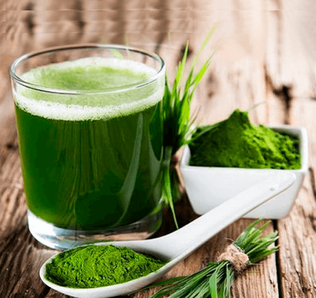
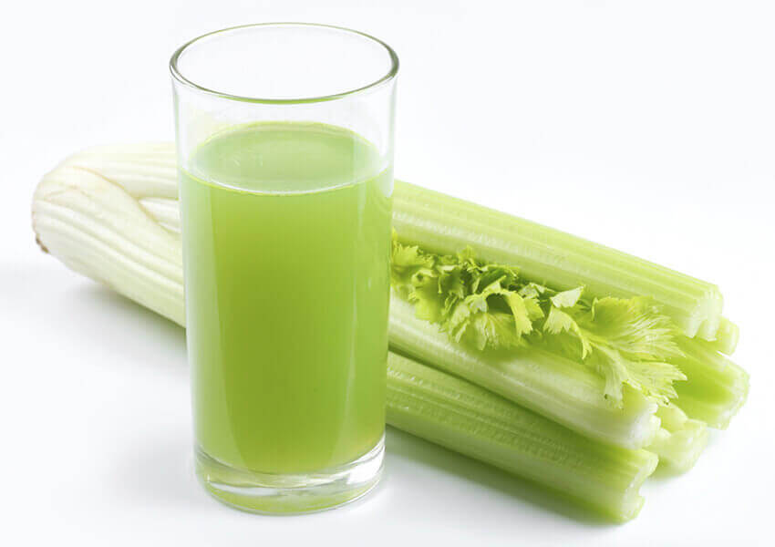
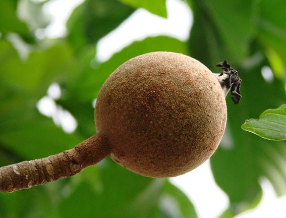

¿Para qué es buena la moringa?

Propiedades medicinales y nutricionales y usos de la moringa. La moringa, Moringa oleifera, es un árbol nativo de India que crece en países subtropicales del continente asiático y africano. Tradicionalmente, de la moringa se utilizan sus hojas, vainas, semillas, aceite, flores, raíces, ramas y corteza tanto para consumo alimenticio como para recuperar y mantener la salud debido a sus cualidades terapéuticas. Cuando leas el artículo verás que no es una casualidad que a la moringa se le llame el árbol de la vida.
Valor nutricional de la moringa: El contenido en vitaminas, minerales, ácidos grasos y aminoácidos de la moringa la han convertido en un estupendo recurso natural para prevenir la carencia de estos nutrientes básicos.
Por otra parte, la gran cantidad de polifenoles y flavonoides que contiene la moringa son los responsables de su actividad medicinal. Vamos a conocer para qué es buena la moringa y 15 usos medicinales comprobados en estudios clínicos.
15 usos medicinales comprobados de la moringa
1.- El extracto de hojas de moringa tiene gran poder antioxidante. Las hojas de la moringa contienen varios tipos de antioxidantes diferentes, como el ácido ascórbico (vitamina C), carotenoides, flavonoides y fenoles. Estos componentes son capaces de inhibir el daño oxidativo en nuestro ADN.
2.- La moringa y la diabetes. Las hojas de moringa poseen acción antidiabética o antihiperglucemiante. En un estudio llevado a cabo en personas con diabetes tipo II con polvo de hoja de moringa se demostró que redujo los niveles de azúcar en sangre por su efecto antidiabético, y por lo tanto, tuvo un impacto beneficioso para la salud de estas personas.
3.- La moringa y el colesterol. Las hojas de la moringa molida y su extracto tienen actividad antidislipidémica, reduciendo los niveles de lípidos o grasa en sangre. Este efecto es muy beneficioso para personas con problemas de alteraciones y/o exceso de lípidos en sangre como colesterol. Pero además, en un estudio llevado a cabo en ratas, se observó también una reducción en la grasa acumulada en el hígado y de la bilirrubina.
4.- Moringa para curar heridas y proteger los tejidos. Otra cualidad terapéutica que se ha observado del estudio clínico de la actividad medicinal de la moringa es que protege los tejidos de órganos tan importantes como el hígado, el corazón, los riñones, los testículos o los pulmones. Además la moringa es efectiva para estimular la curación de heridas y que tengan una buena cicatrización.
5.- Moringa para los dolores. La acción analgésica de la moringa puede mitigar o aliviar dolores que podamos padecer en nuestro organismo. En particular, se ha demostrado que la moringa es efectiva para reducir los dolores ocasionados por la artritis.
6.- Moringa para úlceras de estómago y acidez. el efecto antiulceroso que posee la planta de la moringa lo convierte en un remedio natural para prevenir las úlceras de estómago y protegerlo de estos daños. En estudio llevado a cabo en personas con úlceras ocasionadas por la toma de medicamentos farmacológicos (aspirina) la moringa fue útil para proteger el estómago ante úlceras, para mejorar su estado en caso de que existan y además se redujo la acidez gástrica.
7.- Moringa para hipertensión. La acitividad antihipertensiva de la moringa es sumamente beneficiosa para las personas que tengan hipertensión arterial o tensión alta, ya que, el exceso de presión de forma continuada sobre las paredes de las arterias conllevar dolor de piernas al caminar, impotencia en hombres, problemas de vita, insuficiencia renal, hipertrofia del corazón, arritmias, insuficiencia coronaria y angina de pecho.
8.- La moringa tiene efecto antiinflamatorio. Otro efecto observado del efecto medicinal de la moringa es que tiene actividad antiinflamatoria, siendo de gran ayuda en aquellas condiciones médicas que están causadas por inflamación o que incluyen la inflamación como síntoma (como por ejemplo obesidad, artritis, traumatismos, etc.).
9.- La moringa protege el hígado. Entre las acciones principales de esta planta medicinal podríamos resaltar su acción hepatoprotectora. Será de gran utilidad para las personas que deseen prevenir dolencias de hígado o que ya las tengan y quieran recuperar la salud en lo posible.
10.- La moringa y el cáncer. Se ha observado clínicamente el efecto del extracto de hojas de moringa que inhibe la proliferación de células cancerosas, en particular en células cancerígenas en el pulmón y en otros órganos.
11.- Prevenir cataratas con moringa. La moringa nos ayuda a cuidar la vista y puede prevenir daños degenerativos como la aparición de cataratas, especialmente cuando las cataratas se deben a la diabetes.
12.- La moringa y el sistema inmunológoco. Estudios clínicos llevados a cabo en animales con el sistema inmunológico deprimido evidenciaron el efecto inmunoestimulante de la moringa, es decir, que esta planta es capaz de mejorar la función del sistema inmunológico. Curiosamente se obtuvieron mejores resultados con pequeñas dosis al ser éstas más efectivas.
13.- Moringa y el sistema nervioso central. La acción neuroprotectora de la moringa se sigue estudiando, pero en ensayos clínicos se ha podido observar cómo la moringa puede estimular la función cognitiva (como favorecer el aprendizaje y la memoria) y proteger el sistema nervioso central en casos de demencia. Incluso se ha podido observar que con dosis orales de moringa se ha atenuado la disfunción cerebral inducida por isquemia.
14.- La moringa y el asma. En estudios llevados a cabo en animales y también en personas con asma, se observó una mejora y una remisión de los síntomas de esta dolencia del aparato respiratorio una vez concluido el estudio. Por lo tanto, otra cualidad del árbol de la vida es que tiene acción antiasmática y que mejora los síntomas del asma bronquial en personas y animales.
15.- La moringa es cardioprotectora. Además de todo lo mencionado anteriormente, podemos añadir que la moringa cuida de nuestro corazón y favorece que éste siga realizando sus funciones de manera óptima. La moringa estimula la circulación de la sangre, tiene un ligero efecto anticoagulante y podría prevenir enfermedades cardiovasculares, que hoy en día son la primera causa de mortalidad en todo el mundo.
Además se están llevando a cabo más estudios clínicos con la moringa y con algunos de sus componentes aislados que parecen ser muy prometedores, como por ejemplo su posible acción neuroprotectora. La moringa es una planta con inmenso potencial medicinal.
Partes de la moringa que se utilizan para fines alimentarios y medicinales
Esta es información general, para cualquier consulta acude a un profesional de la salud que pueda recomendarte lo mejor en base a tus circunstancias personales.
Los beneficios nutricionales y medicinales del apio

El apio es una hortaliza muy saludable con grandes propiedades nutricionales y medicinales. No puede faltar a la hora de preparar caldos y platos tan completos, nutritivos y tradicionales como los potajes o pucheros. Hipócrates ya lo utilizaba por sus propiedades medicinales y los romanos y griegos lo utilizaban tanto por sus usos culinarios como curativos. Desde luego, es una verdura importante a incluir de forma habitual, en especial si estás haciendo dieta para adelgazar y quieres perder peso de forma saludable.
El apio se puede consumir cocinado y también crudo en ensaladas y para acompañar hummus y otros dips.
Propiedades nutricionales del apio
El apio contiene vitaminas A, B1, B2, B6, B9, C y E, minerales como el potasio, sodio, calcio, zinc, magnesio, hierro, azufre, fósforo, cobre y silicio, aceite esencial y fibra.
El apio es una verdura con acción antioxidante, cardioprotector, antibacteriana, diuretica, antiinflamatorio, expectorante, depurativa, sedante, digestiva, inmunoestimulante, analgésico.
Beneficios para la salud del consumo del apio
Es uno de los diureticos más potentes.
Aumenta nuestras defensas naturales.
Debido a su accion expectorante, es muy útil para eliminar mucosidad.
Está indicado en dolencias con inflamacion.
Produce una inhibición en el desarrollo de células cancerígenas.
Ayuda a depurar el organismo.
Estimula la eliminación de líquidos acumulados en el organismo.
Contribuye al buen funcionamiento del sistema nervioso y muscular.
El apio ayuda a reducir la tensión arterial.
Mejora el peristaltismo intestinal.
Favorece la reduccion de los niveles de glucemia en sangre.
Está recomendado en dolencias articulares y reumatismo.
La fibra del apio ayuda a reducir el colesterol en sangre.
Es un excelente remineralizante.
Mejora los casos de gota, acido úrico alto o hiperuricemia.
Puede aliviar los dolores articulares.
El apio combate los daños de los radicales libres.
Nos ayuda a prevenir el estreñimiento.
Puede contribuir a eliminar los cálculos renales y biliares.
Acelera la cicatrización de heridas.
Es de ayuda en casos de fatiga crónica o de astenia y cansancio.
Té Verde
Por años la medicina natural ha sabido que es uno de los mejores antioxidantes que existen, se trata de una bebida que gracias a sus compuestos mejora el metabolismo,
reduce el riesgo de cáncer y colabora con la pérdida de peso gracias a la desintoxicación del organismo.
Los compuestos del té verde como las catequinas, ayudan a recuperar la memoria y las capacidades cognitivas,
asegura un equipo de investigadores en China quienes publicaron los resultados de sus investigaciones en la Revista de Investigación de Alimentos y Nutrición Molecular.
• Es un poderoso antioxidante
• Previene la caída del cabello.
• Aumenta la fertilidad.
• Combate problemas de próstata.
• Acelera el metabolismo
• Actúa como un potente diurético
• Reduce la grasa acumulada. El té verde puede inhibir la lipólisis, el proceso por el cual las grasas (triglicéridos) se descomponen en el cuerpo.
La inhibición de la descomposición de los triglicéridos impide la absorción de la grasa, asegurando con ello que no se ganará mucho peso
Chontaduro
Su nombre científico es (Bactris gasipaes) y es una fruta nativa del trópico americano que formó parte de la dieta básica de los indígenas de la región. Según el estudio realizado por ingenieros agroindustriales de la Universidad del Cauca Análisis fisicoquímicos y bromatológcos de chontaduro en la cuenca amazónica, su cultivo ha cobrado fuerza en la última década en distintos países de América Latina, desde el sur de México hasta el sur de Brasil y Paraguay, con una mayor diversidad en la Amazonía.
Se trata de una fruta dotada de grandes propiedades nutricionales, con una pulpa fibrosa-harinosa y rica en almidón (carbohidratos), proteína, ácido ascórbico, caroteno, niacina y otros elementos importantes para la dieta humana. Aunque su contenido de proteínas es inferior al del fríjol, garbanzo, lenteja, maní y soya (solo tiene un promedio de 7.8g por cada 100 g de pulpa seca), su contenido de caroteno (superior al de la zanahoria y el achiote) y su nivel de ácido palmitoléico, le dan una connotación especial como alimento y fuente de grasa. Es rico en minerales indispensables como calcio, hierro, zinc, fósforo y cobre, y posee una alta concentración de betacaroteno, precursor de la vitamina A, el cual es un excelente antioxidante que retarda el envejecimiento prematuro y cumple su función como anticancerígeno ayudando a proteger y rehabilitar piel y mucosas.
Por su alto contenido en carbohidratos y aminoácidos, es una fuente energética natural, de ahorro de proteínas, que regula el metabolismo de las grasas. Es ideal para personas que necesitan energía inmediata en el ejercicio, para hacer actividades que requieran gran esfuerzo.
El chontaduro, provee ácidos grasos esenciales polinsaturados omega 3 y 6 (linoleico y linolénico), que protegen al corazón de enfermedades cardiovasculares y nivelan el porcentaje de grasas en el cuerpo como el colesterol y los triglicéridos. Su aporte de proteína por otro lado, ayuda a mantener y reparar el músculo, regular funciones endocrinas y sistémicas y reforzar el sistema inmunológico.
La arginina es uno de los aminoácidos de mayor concentración en la composición de esta fruta, lo que le atribuye importantes beneficios al cuerpo como:
-Mejora el sistema inmune
-Mejora la función sexual aumentando el flujo sanguíneo
-Puede aumentar la cantidad de esperma, útil en el tratamiento de infertilidad masculina.
-Estimula la producción de la hormona de crecimiento.
-Quema las grasas y ayuda a la construcción muscular.
-Favorece la cicatrización de las heridas.
-Puede impedir el crecimiento de distintos tipos de tumores cancerosos.
-Favorece la producción de células T, permitiendo al cuerpo protegerse mejor.
-Ayuda al crecimiento del cabello y uñas.
Otro componente de alto nivel es la fibra, esto ayuda a aumentar las veces que se va al baño favoreciendo la desintoxicación del organismo y la fácil expulsión de heces. Además, activa la flora bacteriana y da la sensación de saciedad, disminuyendo las ganas de comer constantemente, especialmente útil para las personas que quieran bajar de peso.
Esta fruta regula el colesterol malo o LDl, capaz de cubrir las paredes del intestino evitando la absorción del colesterol de los alimentos. Su fibra soluble, ayuda a disminuir la absorción de los carbohidratos de los alimentos que ingerimos, evitando el aumento brusco de azúcar en la sangre y protegiendo al organismo contra enfermedades del corazón, cólon, mama, cancerosas, entre otras.
Borojo

Beneficios Nutricionales
El borojó es conocido por su alto contenido proteico, de vitaminas y minerales.
Parece que en todas partes del mundo las bebidas energéticas están ganando popularidad cada dia más. Casi ninguna otra fruta en el mundo tiene tan alta cantidad de vitaminas B solubles en agua que son excelentes para la salud. De hecho, existen muchas historias entres los nativos de Colombia y Costa Rica quienes utilizaron la pulpa por siglos para mantener un nivel alto de energía mientras realizaban largos viajes por la selva.
Las historias también abundan en estos lugares acerca de su capacidad afrodisíaca o propiedades naturales de "Viagra", que pueden ser atribuidas, en parte, a estos nutrientes. El ácido nicotínico (B3) es encontrado en cantidades muy altas y, en investigaciones de medicina ortomolecular, se ha demostrado que ayuda en el tratamiento de la depresión, ansiedad, artritis, cáncer y más en particular, la esquizofrenia. Otras vitaminas y minerales encontrados en cantidades grandes son el hierro, el magnesio, el calcio, el fósforo, las vitaminas C, B1, B2 y silicio.
El fósforo se encuentra en gran abundancia en esta fruta exótica y es excelente para las funciones del cerebro, como la memoria y la concentración. Los vegetarianos también lo adoran debido a su cantidad típicamente alta de proteína y contenido de aminoácidos esenciales. Una libra equivale a 3 libras del contenido de aminoácidos de la carne. Investigación científica reciente también realizada por la Universidad de Santiago en California, ha mostrado que el borojó contiene abundancia de una sustancia química llamada sesquiterperlatona, que inhibe el crecimiento de las células en tumores y promete ayudar en el tratamiento de enfermedades terribles, como el cáncer.
Resumen de los beneficios para la salud del Jugo de Borojó:
1. Conocido como la fruta energética por su contenido de vitaminas B, suministrando un aumento en los niveles de energía para los atletas y aquellos que buscan un impulso extra diario. Es una "bebida energética natural".
2. Su alto contenido de fósforo ayuda a proteger las funciones del cerebro.
3. Tiene un alto contenido de aminoácidos y proteínas.
4. Es una "Viagra" y afrodisíaco natural, conocido como Jugo del Amor en los pueblos indígenas de Panamá, Colombia y la región del Amazonas.
5. Los nativos lo han utilizado por siglos para curar heridas, equilibrar el nivel de azúcar en la sangre, controlar la hipertensión arterial, regular la tensión, aliviar las molestias menstruales e infecciones bronquiales.
6. Es una fuente de Niacina (B3), que puede ayudar a combatir síntomas de depresión, ansiedad y problemas de comportamiento en niños.
7. Está lleno de otros fitonutrientes, vitaminas y minerales, que aportan beneficios a su salud.
8. Puede ser utilizado para el consumo en las siguientes formas: jugo, jalea, salsa, pulpa, en bebidas alcohólicas, helado, cápsulas y extracto.
9. Fortifica el ADN y las estructuras de RNA ayudando en la regeneración celular.
10. Puede ayudar con problemas de colesterol.
11. Es rico en un compuesto novedoso de polifenol que puede ser, en parte, responsable de los beneficios para la salud que se le atribuyen. Todavía se están realizando investigaciones para determinar cuáles beneficios para la salud puede aportar.